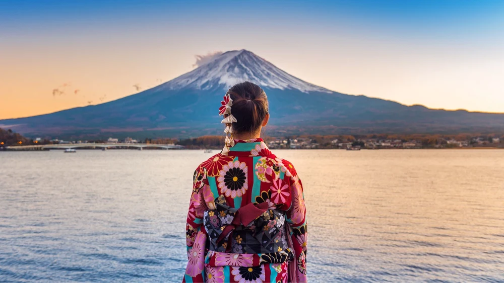
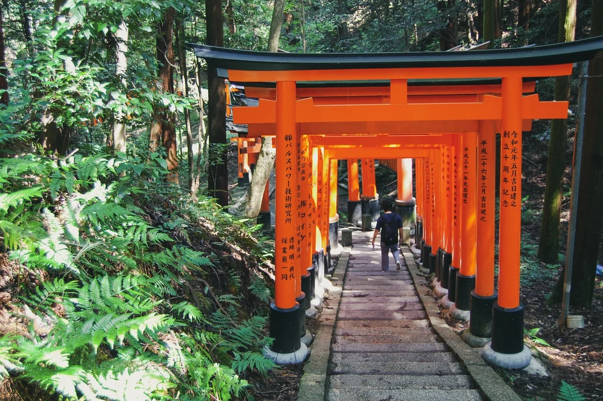

Tokyo DisneySea ditambah hotel, pertokoan, dan banyak lagi, menawarkan banyak keseruan dan pengalaman magis buat kamu Ada banyak wahana seru yang bisa kamu eskplor di Tokyo Disneyland. Namun, bersiaplah untuk mengantre untuk wahana-wahana populer..
PesanBerdiri di ketinggian 3.765 meter, Mount Fuji menjadi gunung tertinggi Jepang! Gunung berapi ini merupakan salah satu situs ikonik dan menjadi favorit banyak orang. Selain itu, Gunung Fuji menyimpan berbagai banyak kisah menarik dan disembah sebagai gunung suci.
PesanFushimi Inari Taisha adalah Kuil Shinto yang berada di Fushimi-ku, Kyoto, Jepang. Kuil ini merupakan kuil pusat bagi sekitar 40.000 kuil Inari. Kuil utama terletak di kaki Gunung Inari dan tanah milik kuil mencakup gunung yang tingginya 233 meter.
PesanShibuya Crossing menjadi magnet yang begitu kuat bagi para turis untuk berkunjung ke Tokyo. Shibuya merupakan satu dari 23 kota bagian di Tokyo. Area ini dipenuhi dengan tempat hiburan sehingga menjadi kawasan populer anak muda Tokyo.
Pesan